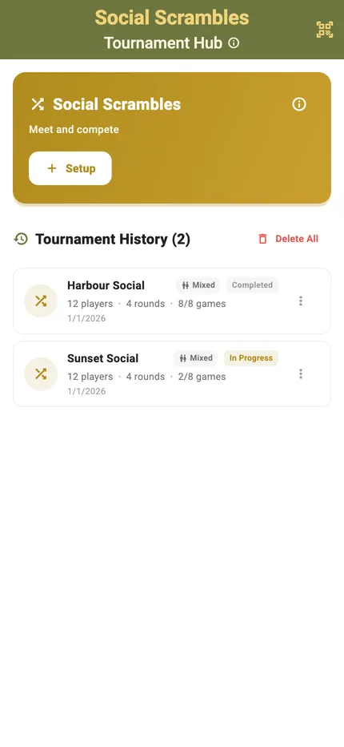
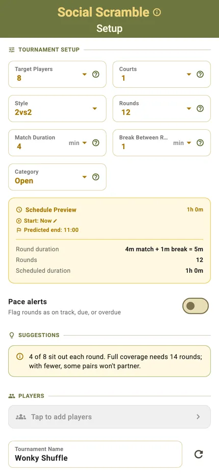
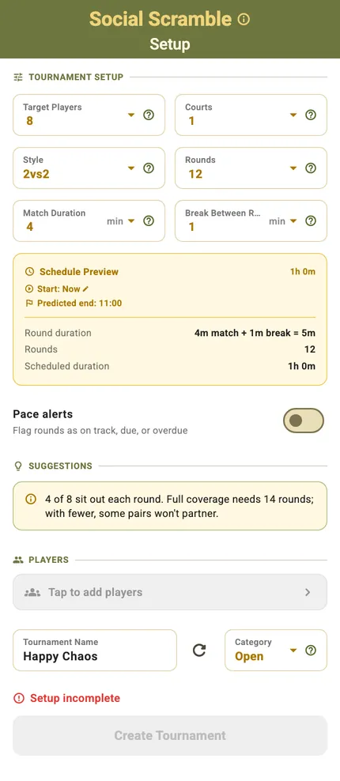
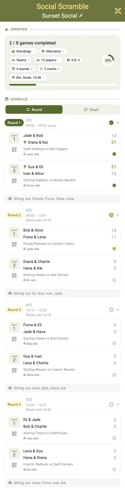
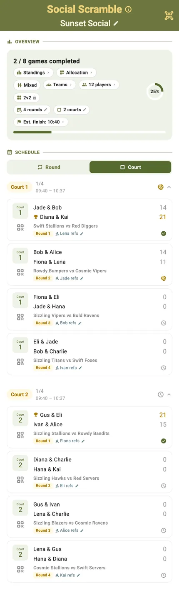
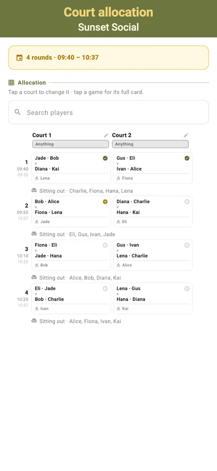
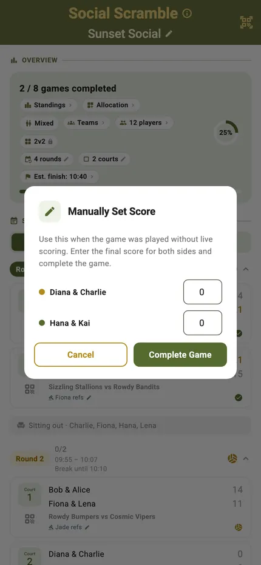
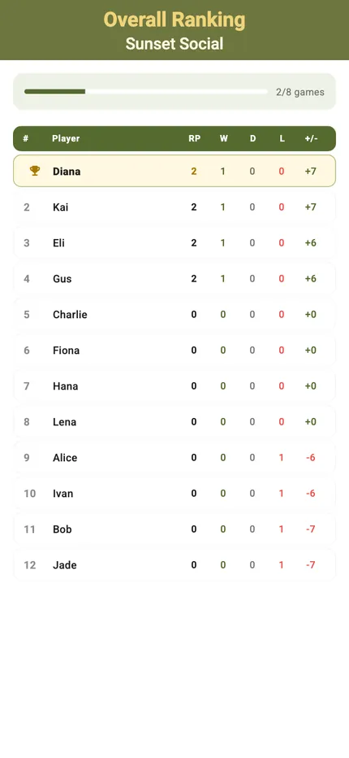
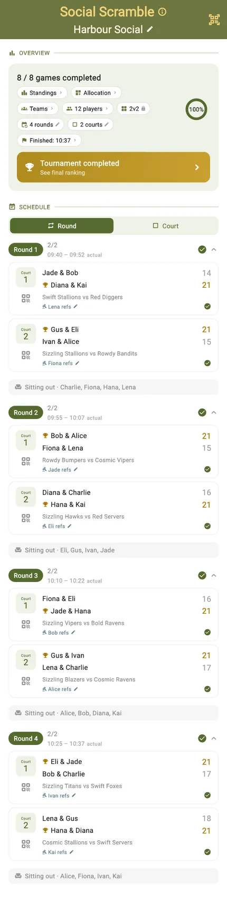
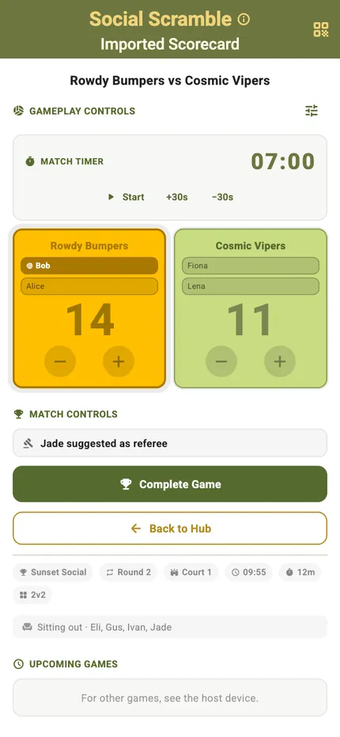

Social Scrambles

You turn up as a player, not as a team. TournaQ draws a new partner for you every round, balances the courts so nobody sits out more than anyone else, and keeps a ranking for every individual — so at the end there is a winner, even though the teams changed all evening.
Tell it how many players you have and how long you have got. It works out the number of rounds, the schedule, who referees, and when you will finish — and it says so up front if the plan you have asked for will not let everyone play with everyone.
Best for
- Social beach volleyball sessions where mixing people is the whole point
- Club training nights where every player should meet every other player
- Groups of roughly 6 to 20 players with a fixed time slot
Finding it in the app
Social Scrambles lives under Single Competitions & Socials in the TournaQ Arena. The hub keeps every scramble you have run, so last week's session is two taps away.
The Arena
Every format the app can run, grouped by the kind of session it suits: quick games, single competitions and socials, and team competitions. The number on a card is how many of those you have run.

The Social Scrambles hub
New Tournament starts a session. Below it sits your history — each entry showing the date, the player count and how far it got, so you can reopen a session or copy its settings.

Setting it up
Tell TournaQ how many players you have, how long you have got and how many courts. It works out the rest — the number of rounds, when you will finish, and whether the plan actually plays well.
Players, time, courts
Target players, courts, style, rounds, match duration and the break between them. Every field updates the Schedule Preview underneath, so you can see the finish time move as you change your mind.

The whole form
Further down: pace alerts, the player list and the tournament name. Nothing is mandatory beyond players and time — the defaults produce a sensible session on their own.

It tells you when the plan is wrong
Six rounds with twelve players means some pairs never play together. TournaQ says so before you start, and offers the number of rounds that would fix it — one tap to accept.

The session at a glance
Once it starts, one screen carries the whole session: how far along you are, who is on which court, who is sitting out, and when you will be done.
Progress and settings in one row
Games completed, a progress ring and a row of pills — standings, allocation, teams, player count, format, rounds, courts and estimated finish. A pill with a pencil can still be changed; one with a lock has been fixed by play already starting.

Round by round
The schedule grouped by round, each match showing its court, its players and its score. Finished rounds collapse, the live round stays open, and a break between rounds is shown as its own row.

Or court by court
The same matches regrouped by court. This is the view to hand someone who is refereeing one court all session and does not care what is happening on the others.

Who is on which court
The allocation grid lays every round against every court, so you can see the shape of the session and spot a player who has been sitting out too often.

The player list
Everyone in the session with their games played and points. From here a player can be paused, renamed, swapped with someone else, or taken out entirely.

The game card
Every match in the schedule is a card. Tap it to see the detail, open the scorecard, or just type the result if the match was played while you were looking the other way.
Match details
Who is playing, which court, which time slot, and who is refereeing. The same sheet is where you reassign a court or change the referee mid-session.

Or just enter the score
Not every match gets scored live. Enter the final score directly and the standings update exactly as if you had tapped through every rally.

Scoring a match
The scorecard is built for one hand at the side of a court: big targets, the serving side marked, and undo for when the call goes the other way.
Portrait
Tap a side to award the point. The server is highlighted, service passes automatically when the other side scores, and the round timer runs down in the header so you know how long is left.

Landscape
Turn the phone and the same controls rearrange for a net post or a table at the side of the court. Nothing is hidden — the layout changes, the functions do not.

Standings, live and final
Because everyone plays with everyone, the ranking is individual. It updates as results land, so the table is always current — no waiting for the organiser to add it up.
Live standings
Every player with their points, games played and win record, ordered as it stands right now. Players check it between rounds without asking anyone.

Final rankings
When the last match is in, the table closes with the winner at the top. This is the screen to hold up, or share as an image.

The finished session
The schedule keeps every result. A completed session stays in the hub with all its scores, so a question about last month's ranking has an answer.

When the session changes
People arrive late, roll an ankle, or have to leave at six. A session that cannot absorb that is a session someone ends up re-planning on paper.
Someone needs a break
Put a player on a break and they are left out of the next draws, then folded back in when they return. Their earlier results stand.

Someone has to leave
Ejecting a player asks what should happen to the matches they were drawn into, rather than silently corrupting the rest of the schedule.

Someone steps in
A stand-in takes a seat on court for a player who cannot make it, so the round runs on time and the court is never a player short.

Getting it off your phone
The session lives on the device that runs it, and nothing needs a signal. Sharing is deliberate — a QR code between two phones, no account and no upload.
Share by QR code
Put a scorecard or a whole tournament on screen as a QR code and let another phone read it. It works on a beach with no reception, because nothing leaves the two devices.

Scores from another phone
A scorecard that arrived from someone else's device shows where it came from, so results scored on two phones can be folded back into one session.

Start to finish
- Open the TournaQ Arena and pick Social Scrambles.
- Tap New Tournament.
- Set the players, the time you have, the courts and the match length.
- Check the schedule preview, and take the suggestion if it offers you better partner coverage.
- Add the players — new names, saved ones from the Players hub, or a random fill to try it out.
- Name the session and tap Create Tournament.
- Tap the first match to open its scorecard, and start the timer.
- Tap a side to award each point. Undo takes back the last one.
- Finish the match and move straight to the next one.
- Between rounds, put anyone who needs it on a break, or bring in a stand-in.
- Play out the rounds and read the final rankings.
- Share the result by QR code if someone else needs it on their phone.
Have a question about Social Scrambles, spotted something missing, or want to suggest an improvement?